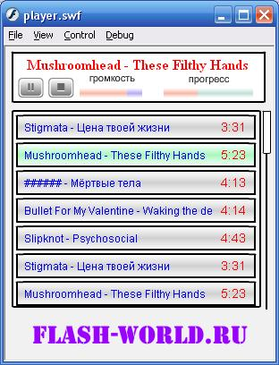

Перед
вами урок по созданию flash mp3 плеера с плейлистом (xml), который
можно поставить себе на сайт. Урок будет полезен начинающим
программировать на actionscript 2, так как мы будем учиться разбирать
xml формат данных и работать с классом Sound.
Скорее всего, вы уже
много раз встречали на сайтах подобные mp3 плееры, позволяющие
прослушать песню прямо на сайте, не скачивая её к себе на компьютер (так
называемой, потоковое воспроизведение). Сейчас мы с вами сделаем сами
такой флеш mp3 плеер (flash actionscript 2), который вы сможете
установить на свой сайт. Если вдруг у вас что-то не получится, вы можете
бесплатно скачать исходник flash mp3 плеера, который я сделал для
примера. Наш плеер будет брать плейлист из внешнего .xml файла, то есть
количество треков не является фиксированным и ничем не ограничено.
В
нашей флешке – mp3 плеере будет всего два кадра: первый – пустой, второй
– сам плеер. Пока не загрузится xml файл с плейлистом, флешку будет
стоять на первом кадре. В первый кадр пишем код:
// для того, чтобы флешка не
масштабировалась при изменении размеров
Stage.scaleMode = 'noScale';
//
для того, чтобы флешка могла работать с кириллическими символами
System.useCodepage
= false;
// останавливаем флешку на первом кадре,
// и ждём пока
загрузится xml
// после загрузки переводим нашу флешку на второй
кадр,
// с нашим mp3 плеером
stop();
playlist = new XML();
playlist.ignoreWhite
= true;
playlist.onLoad = function() {
_root.gotoAndStop(2);
}
playlist.load("playlist.xml");
Теперь
переходим на второй кадр и начинаем делать все функциональные элементы
плеера: кнопки и список воспроизведения. Плеер, который я сделал для
примера, не отличается шикарным дизайном, ещё раз повторюсь, это только
пример


Названия
(instance name) мувиклипов:
play_but – кнопка play;
pause_but
– кнопка pause. Она находится точно под кнопкой play.
stop_but
– кнопка stop;
scroll – клип со скроллером (полосой
прокрутки) для списка воспроизведения (плейлиста). В нём находится
горизонтальная линия, а также сам бегунок, его instance name –
bar;
Клип
– список воспроизведения называется
pl. В нём находятся рамка,
пустой клип-контейнер (container), маска для него (
m), такого же
размера, как и рамка;
vol – регулятор громкости. Внутри него –
горизонтальная линия-подложка и линия другого цвета (
bar),
которая будет показывать уровень громкости;
position –
отображение прогресса загрузки и воспроизведения. На самом нижнем слое
находится подложка, выше – линия другого цвета (
mp3_load),
отображающая загрузку mp3 трека, ещё выше – линия, показывающая позицию
воспроизведения (
bar).
В самом верху есть динамическое
текстовое поле (var =
song), которое показывает название играющей
песни.
Также необходимо сделать клип – элемент плейлиста. В моём
примере он устроен так: в самом низу находится клип fon (как бы картинка
– подложка), в нём есть три кадра, которые будут сменяться при
наведении мыши и выборе песни (первый кадр – неактивное состояние,
второй – при наведении мыши, третий – если играет эта песня), в первом
кадре этого клипа висит
stop();
Над
клипом
fon находятся два текстовых поля, для отображения
названия песни и длительности (var
label и
time). Клипу –
элементу плейлиста нужно дать идентификатор экспорта item. В его первом
(и единственном) кадре находится код:
// делаем обработчики кликов на xml
плейлист (выбор песни)
// а также смену фона при наведении/уходе
курсора с элемента списка воспроизведения
// При наведении на пункт:
fon.onRollOver
= function () {
if
(_root.isPlaying != i) { // если сейчас играет не эта песня,
fon.gotoAndStop(2);
// то переводим мувилип fon на второй кадр
}
}
//
При уведении курсора и при отпускании кнопки мыши вне пункта списка
fon.onRollOut
= fon.onReleaseOutside = function () {
if
(_root.isPlaying != i) {// если сейчас играет не эта песня,
fon.gotoAndStop(1);//
то переводим мувилип fon обратно на первый кадр
}
}
fon.onRelease
= function() {
// playSong – функция, при вызове которой
будет проигрываться песня номер i
_root.playSong(i);
}
Для
того, чтобы проверять наш плеер, создадим xml плейлист (playlist.xml) в
одной папке с нашим mp3 плеером. Его содержание должно быть примерно
таким:
<data>
<item
url="1.mp3" label="Stigmata – Цена твоей жизни" time ="3:31"
/>
<item url="2.mp3" label="Mushroomhead - These Filthy Hands"
time ="5:23" />
<item url="3.mp3" label="###### - Мёртвые тела"
time ="4:13" />
<item url="4.mp3" label="Bullet For My
Valentine - Waking the demon" time ="4:14" />
<item url="5.mp3"
label="Slipknot - Psychosocial " time ="4:43" />
</data>
Атрибут
url хранит ссылку на mp3 файл, label – название трека, time – время
(продолжительность) песни.
Переходим на временную диаграмму, во
второй кадр вставляем код (комментарии по ходу):
// инициализация
yy = 5; // размещать
элементы плейлиста будем от 5
dif = 3; // расстояние по высоте между
элементами в списке
url = []; // массив для хранения ссылок на песни
//
перебираем все элементы xml файла плей-листа нашего mp3 плеера
for
(i=0; i<playlist.firstChild.childNodes.length; i++) {
mc
= _root.pl.container.attachMovie('item', 'item'+i, i);
//
в список воспрозведения из библиотеки добавляем мувиклип item
mc._x
= 5; // немного сдвигаем его по оси _x
mc._y
= yy; // назначаем новую координату по _y
yy
+= mc._height+dif; // считаем координаты для следующего элемента
плей-листа
dataHolder =
playlist.firstChild.childNodes[i];
// в каждый элемет плейлиста
(списка) пишем несколько переменных:
mc.label
= dataHolder.attributes.label; // название песни
mc.time
= dataHolder.attributes.time; // время звучания песни
mc.i
= i; // в каждый пункт списка пишем его номер
mc.playing
= false; // значит, что текущая песня не является выбраной в данный
момент
url[i] = dataHolder.attributes.url; //
заносим ссылку на mp3 файл в массив
}
///////////////////////////
//
для того, чтобы текст в динамических полях отображался, маску нужно
применять программно.
pl.container.setMask(pl.m);// что мы и делаем
=)
// если список умещается в контейнер, то полоса прокрутки
(скроллер) нам не нужен.
if (pl.container._height < pl.m._height) {
// проверяем
scroll._visible = false; //
если это так, скрываем скроллер
}
// если скроллер нам
всё-таки нужен
// при нажатии на ползунок
scroll.bar.onPress =
function() {
// начинаем его перетаскивать от самого верху (0) до
низа-выоста ползунка
scroll.bar.startDrag(false,
4, 0, 4, scroll._height-scroll.bar._height);
scroll.onMouseMove
= function () { // при движении курсора
//
двигаем контейнер со списком воспроизведения на нужное расстояние
pl.container._y
= 0-((pl.container._height-pl.m._height+10) * scroll.bar._y /
(scroll._height-scroll.bar._height));
}
}
//
когда пользователь отпускает кнопку мыши, нужно остановить движение
ползунка
scroll.bar.onRelease = scroll.bar.onReleaseOutside =
function() {
scroll.bar.stopDrag();
}
////////////////
isPlaying
= null; // изначально при заходе на страницу песня у нас не играет
//////////////////////
//
функция playSong принимает номер песни, которую нужно играть как
параметр
//////////////////////////
function playSong(mp3) {
sound
= new Sound(); // создаём новый обьект класса Sound
sound.loadSound(url[mp3],
true); // вызываем метод loadSound
//
первый параметр - ссылка, откуда нужно грузить mp3 трек (берётся из
массива url)),
// второй параметр означает,
что можно проигрывать звук, не дожидаясь его полной загрузки
//
(потоковое воспроизведение)
// нужно
"выделить" пункт, который сейчас играет
pl.container['item'+mp3].fon.gotoAndStop(3);
//
также нужно перевести в неактивное состяние пункт списка, который играл
до этого
pl.container['item'+isPlaying].fon.gotoAndStop(1);
//
isPlaying - номер песни, котора сейчас играет, переопределяем её
isPlaying
= mp3;
// song - навзвание mp3 трека вверху
song
= pl.container['item'+isPlaying].label;
//
скрываем кнопку play, показываем кнопки pause и stop
play_but._visible
= false;
pause_but._visible = true;
stop_but._visible
= true;
// ставим шириниу индикатора
загрузки mp3 равной 0
position.mp3_load._width = 0;
// точно то же
для индикатора позиции mp3 файла
position.bar._width = 0;
}
//
регулировка громкости
vol.onRelease = function() {
vol.bar._width
= vol._xmouse;
sound.setVolume(vol._xmouse/vol._width
* 100);
}
// изначально пользователь не видит кнопок play, pause и
stop
play_but._visible = false;
pause_but._visible = false;
stop_but._visible
= false;
// ставим шириниу индикатора загрузки mp3 равной 0
position.mp3_load._width
= 0;
// точно то же для индикатора позиции mp3 файла
position.bar._width
= 0;
// остановка воспроизведения (кнопка stop)
stop_but.onRelease
= function() {
sound.stop(); // останавливаем воспроизведение
//
скрываем кнопки play, pause и stop
play_but._visible = false;
pause_but._visible
= false;
stop_but._visible = false;
// текущую песню (в
плейлисте) переводим в "неактивное" положение (первый кадр)
pl.container['item'+isPlaying].fon.gotoAndStop(1);
isPlaying
= null; // отмечаем, что сейчас не играет не одна песня
// ставим
шириниу индикатора загрузки mp3 равной 0
position.mp3_load._width =
0;
// точно то же для индикатора позиции mp3 файла
position.bar._width
= 0;
}
// пауза воспроизведения
pause_but.onRelease =
function() {
pause_but._visible = false; //
скрываем кнопку пауза
play_but._visible =
true; // показываем кнопку play
stop_pos =
sound.position/1000; // запоминаем позицию, где мы остановили
воспроизведение
// как видите, у обьектов класса Sound есть
интересная особенность,
// свойство position возвращает позицию
воспроизведения в миллисекундах,
// в то время как метод start
принимает время в секундах
sound.stop(); //
осанавливаем воспроизведение
}
// продолжение воспроизведения
(play)
play_but.onRelease = function() {
pause_but._visible
= true; // показываем кнопку пауза
play_but._visible
= false; // скрываем кнопку play
sound.start(stop_pos);
// стартуем воспроизведение с позиции паузы
}
//
функция, которая будет выполняться при каждой смене кадра (обновление
позиции индикаторов)
onEnterFrame = function() {
if
(isPlaying != null) { // если сейчас играет какая-либо песня
t
= sound.getBytesTotal(); // получаем полный размер песни (в байтах)
l
= sound.getBytesLoaded(); // число загруженых байт
// в зависимости
от размера части загруженого mp3 трека, меняем ширину mp3_load
position.mp3_load._width
= Math.round(l/t * position._width);
// также в зависимости от
прогресса воспроизведения меняем ширину мувиклипа bar
position.bar._width
= Math.round(sound.position/sound.duration * position._width);
}
}
//
нажатие на бегунок Прогресс
position.onRelease = function() {
if
(position._xmouse < position.mp3_load._width) { // если позиция,
которую выбрал пользователь уже загружена
//
то перематываем mp3 файл на нужное место
sound.start((sound.duration/1000)
* position._xmouse/position._width );
}
}
Вот
собственно и всё, «собрав» всё правильно, вы получите отличный flash
mp3 плеер для своего сайта!
Если у вас что-то не получилось, вы
можете бесплатно
скачать
исходник моего примера и работать уже с ним (поменять дизайн,
например).
Вот мой пример: